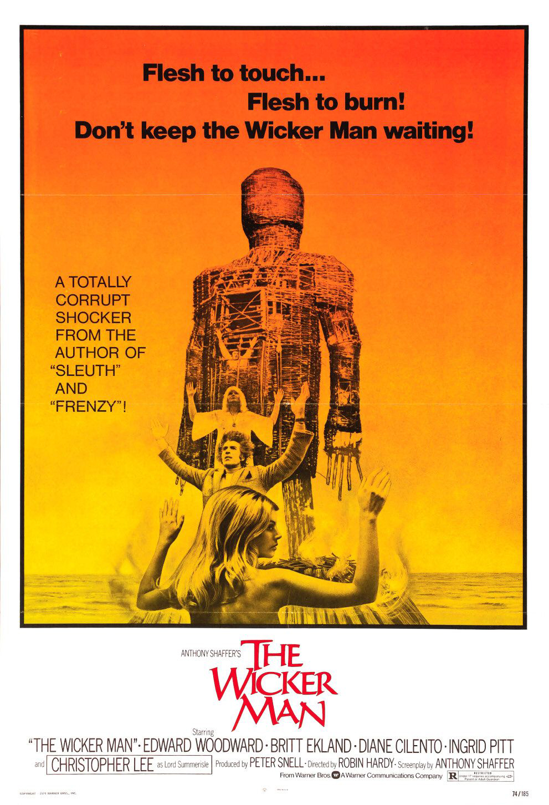

My Favorite Movies and Albums
The Good, The Bad, and The Ugly (1966)
source: Moviepedia
City of God (2002)
 source: IMDb
source: IMDb
The Wicker Man (1973)

source: IMDb
Uncut Gems (2019)
source: Pinterest
No Country for Old Men (2007)
 source: IMDb
source: IMDb
Yes Lawd!, NxWorries (2016)
source: Wikipedia
Fantastic, Vol. 2, Slum Village (2000)
source: Wikipedia
Disintegration, The Cure (1989)
source: Wikipedia
To Pimp a Butterfly, Kendrick Lamar (2015)
 source: Wikipedia
source: Wikipedia
Soul Food, Goodie Mob (1995)
source: Wikipedia